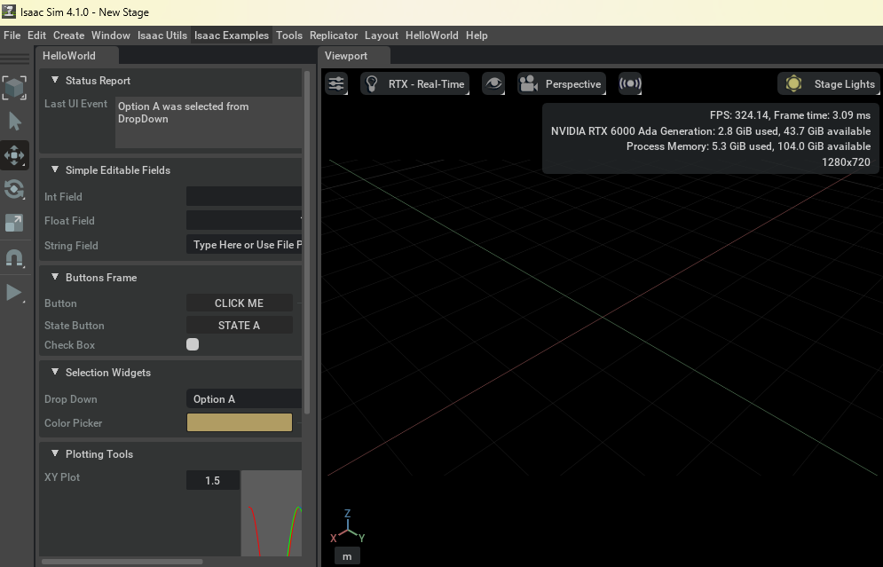

コンテンツにスキップ
Isaac SIM Docs
Templateの作成
Isaac SIM Docs
Home
1.Templateの作成
1.Templateの作成
Templateの作成
Templateの作成
目次
Templateの作成
最小限のtemplate
2.GroundPlate
2.GroundPlate
GroundPlateの設置
PlateにTexture
3.Scene
3.Scene
Sceneを読込(Grid青)
Sceneを読込(Grid黒)
Sceneを読込(工場)
Sceneを読込(部屋)
4.Object
4.Object
Cube
CubeにRigid追加
Cubeを赤に
Cubeを透過
5.Asset
5.Asset
Drum(赤)
6.Python
6.Python
pip
10.Human
10.Human
Worker
11.AGV
11.AGV
IdealWorks
IdealWorks移動
12.Quadruped
12.Quadruped
Go2
Go2動作
13.Humanoid
13.Humanoid
H1
H1移動
14.Fusion360連携
14.Fusion360連携
URDF変換
USD変換
20.Streaming
20.Streaming
RTPでの配信
30.Lab
30.Lab
quadruredsサンプル
bipedsサンプル
armsサンプル
handsサンプル
markersサンプル
camerasサンプル
deformablesサンプル
quadcopterサンプル
40.赤ベコRL
40.赤ベコRL
赤ベコRL(SIM)
赤ベコRL(Lab)
目次
Templateの作成
Templateの作成
Templateの作成
